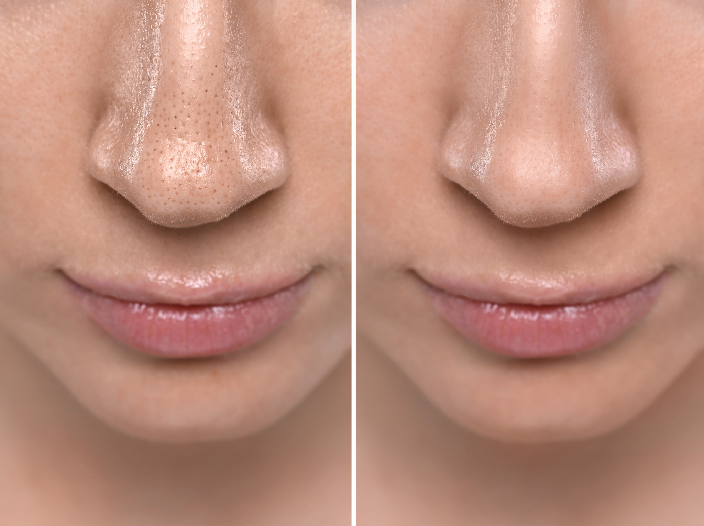

Domine a Limpeza de Pele
Uma jornada que não precisa ser marcada por insegurança, erros e medo de prejudicar a pele da cliente. Da avaliação à extração, do protocolo ao posicionamento profissional.
Acesso imediato após confirmação
Desenvolvido com base na
O Método TST organiza em uma estrutura clínica exata aquilo que muitas profissionais aprendem de forma solta, insegura e inconsistente. Um ecossistema de conhecimento voltado 100% para a segurança, critério de avaliação e resultados tangíveis no consultório.
Nada parece funcionar...
Você aprende técnicas soltas, mas na prática tudo muda.
Insegurança na extração
Fica insegura na hora da extração, tem medo de causar inflamações, não sabe qual produto usar.
Tentativas falhas
Sente que está sempre tentando acertar, mas nunca com confiança técnica para manter consistência nos resultados.


Agora imagine atender com
Sabendo exatamente como avaliar a pele, montar protocolos e executar cada etapa com domínio profissional.
Conheça o método TST: Um sistema completo que une técnica, segurança e estratégia para transformar sua prática na limpeza de pele. Não é conteúdo solto. É um caminho estruturado.
O que você vai dominar
Isso não é mais um amontoado de técnicas isoladas. Você vai dominar todas as macro-etapas necessárias para conduzir uma limpeza de pele com verdadeira autoridade clínica.
Mentalidade, Avaliação e Postura
Aprenda a realizar uma anamnese eficiente, desenvolva postura profissional e elimine os vícios e erros que engessam a sua agenda.
Protocolos, Produtos e Prevenção
Entenda como montar protocolos seguros, escolher produtos não apenas por marca, mas por critério, e como prevenir intercorrências comuns.
Extração, Inflamação e Biossegurança
O núcleo da clínica: extração metódica que reduz sofrimentos desnecessários, cuidado profundo com a pele e rígido padrão inflamatório.
Demonstração Prática Completa
Acompanhe do começo ao fim o método aplicado em modelo real. Da emoliência exata às áreas críticas, conectando a teoria ensinada à vida real do consultório.
Planos e Faturamento
Aprenda a fechar planos de tratamento recorrentes invés de diárias. E por fim, saiba como empilhar seu valor para precificar com sabedoria e estratégia de negócio.
A estrutura completa do
Acesso imediato a todas as aulas teóricas e práticas, além de PDFs e Guias Complementares de Aplicação no seu consultório.
Introdução ao Tratamento
As boas-vindas oficiais e os seus primeiros PDFs essenciais — incluindo o Guia Prático de Aplicação para te orientar em campo.
A Fundação Clínica
Compreenda a mentalidade correta e mergulhe em uma anamnese exigente. Você constrói aqui a segurança para jamais errar no protocolo inicial.
Preparação e Formulação
Diga adeus à refém das marcas. Entenda como escolher produtos e combinações através do único critério que importa: a ciência por trás de cada rotina.
Extração e Biossegurança
O núcleo de execução cirúrgica. Aprenda a extrair com o máximo de precisão, evitando desgastes agressivos, traumas indevidos e garantindo um pós perfeito.
A Prática Real
Onde toda a sua nova bagagem se consolida no cenário de atendimento clínico. Conosco acompanhando em modelo real, etapa por etapa em detalhes.
Plano de Tratamento
Saia do óbvio. Entenda como criar conexões e protocolos combinados com a Limpeza de Pele. Focando no que faz sentido antes, durante e no pós ao seu plano final.
Estratégia e Faturamento
A técnica traz o cliente, o posicionamento dita o seu valor. Aulas exclusivas sobre o pilar comercial da segurança. Acompanha o Guia PDF para Faturar Alto.
Pare de atuar de forma .
O Método TST foi desenhado para a profissional que valoriza a própria capacidade, e que deseja a transformação imediata de insegurança para domínio absoluto da cabine.
Pare de misturar dicas abertas de internet e siga uma rota com começo, meio, fim e preceitos biológicos sólidos.
Tenha o critério exato de onde, quando e como intervir em cada pele. Atue ativamente para mitigar qualquer inflamação indesejada.
Passe a faturar mais unicamente porque sua cliente reconhece um nível altíssimo de especialização na sua avaliação premium.
Investimento Único
Uma formação estruturada para transformar a insegurança técnica no patamar mais seguro, profissional e valorizado da estética.
Acesso completo ao
Método TST
De R$ 497,00
até 12x de R$ 30,72
Acesso anual
Prefere acesso vitalício?
ou 12x de R$ 103,28
Você acessa um método estruturado que reúne:
Método TST agora
Perguntas Frequentes
Todas as respostas que você precisa de forma transparente e direta.